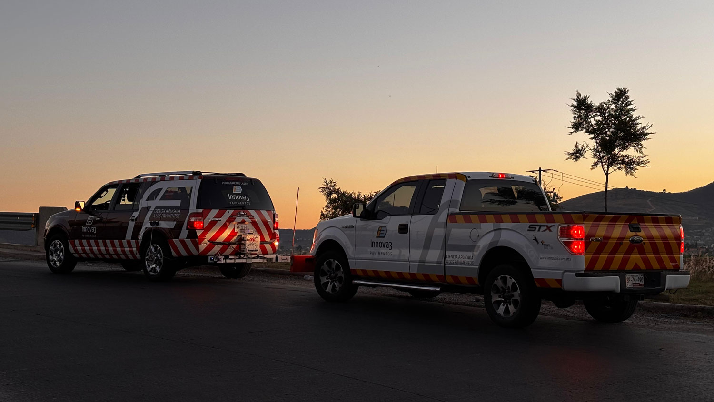

Brindamos servicios de consultoría especializada respaldados por tecnología de vanguardia y la experiencia de nuestro equipo multidisciplinario. Desarrollamos soluciones integrales que permiten a nuestros clientes tomar decisiones informadas, optimizar recursos y reducir riesgos en cada etapa de sus proyectos.

DICTÁMENES TÉCNICOS E INGENIERÍA FORENSE DE PAVIMENTOS
Identificamos con precisión las causas que originan el deterioro prematuro o las fallas en carreteras, pistas y vialidades urbanas a través de un análisis técnico y científico especializado presentado en el dictamen técnico.
Esta información proporciona las bases necesarias para implementar soluciones efectivas, optimizar recursos y prevenir futuras afectaciones en la infraestructura.